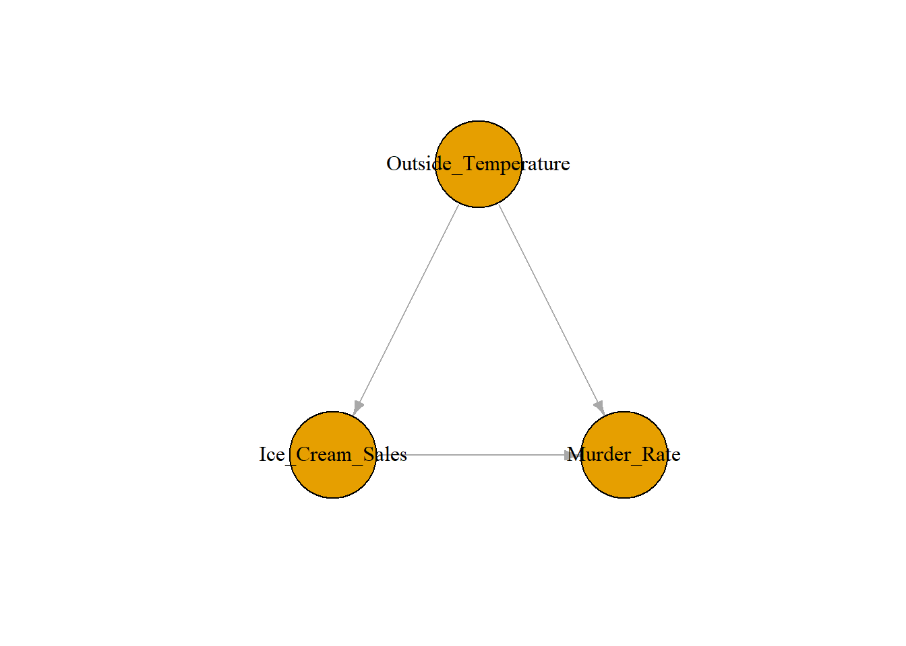
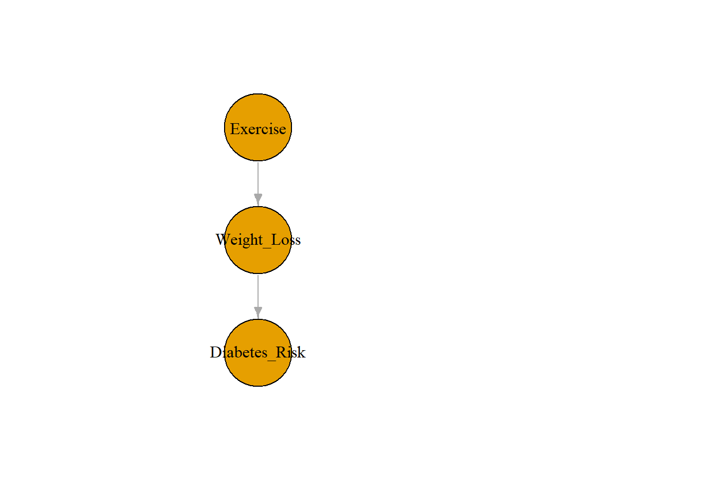
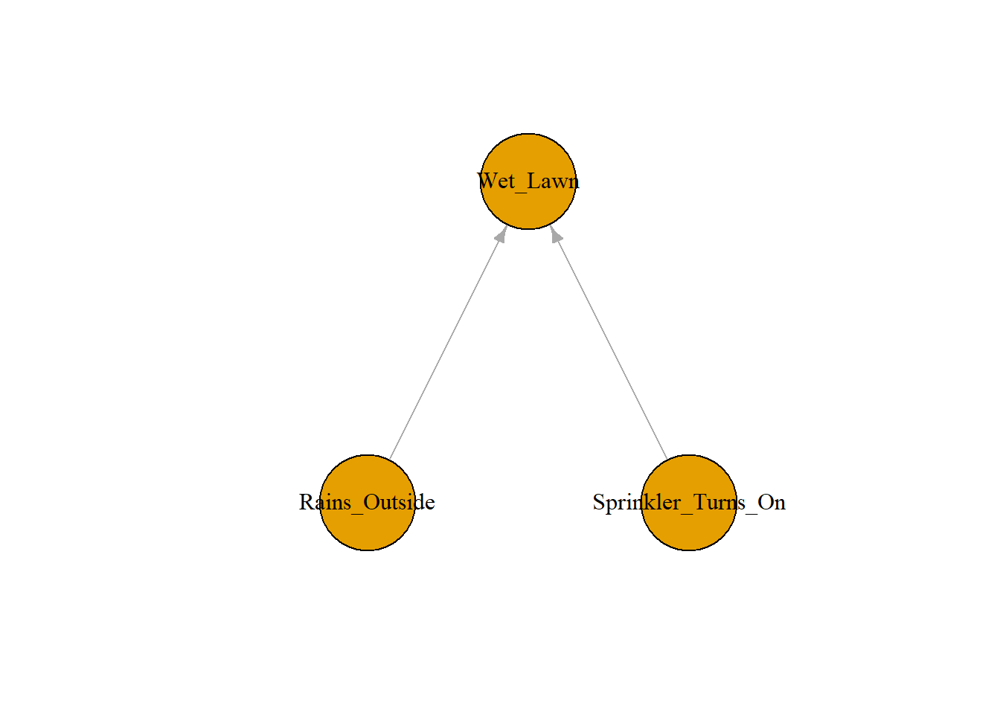

5 Introduction to Causal Diagrams
Class materials
Slides: Module 5
Recording: Module 5, Part 1
Recording: Module 5, Part 2
Textbook reading
Supplementary reading
Rosenbaum, P.R., & Rubin, D.B. (1983). The central role of the propensity score in observational studies for causal effects. Biometrika, 70(1), 41–55.
Examples from public health studies involving confounding adjustment
Topics covered
- Basic principles of directed acyclic graphs (DAGs)
- Common causal structures in public health
- Application: drawing DAGs for public health scenarios
5.1 Basic principles of directed acyclic graphs (DAGs)
Directed acyclic graphs (DAGs) are powerful tools in causal inference that visually represent assumptions about how variables are related. In a DAG, nodes represent variables, and arrows (directed edges) represent causal influences from one variable to another. DAGs are acyclic, meaning you cannot return to the same variable by following a sequence of arrows — this prevents feedback loops. These graphs also are directed, meaning that they show the ways we think the causal relationships flow from one variable to another using the arrows.
The key strength of DAGs lies in their ability to clarify causal pathways, distinguish between confounding and mediation, and identify the variables we need to control for to estimate causal effects accurately. By encoding assumptions explicitly, DAGs help researchers determine whether observed associations reflect true causal relationships or are biased by omitted variables or incorrect conditioning.
In our simulation, we use a DAG to represent a common public health structure involving diet, exercise, and heart health. Diet is a confounder: it directly influences both how much people exercise and their overall heart health. If we ignore diet when estimating the effect of exercise on heart health, we risk attributing diet’s effect to exercise — leading to confounding bias. The DAG for this scenario includes arrows from diet to both exercise and heart health, and from exercise to heart health.
# library(ggplot2)
# library(dplyr)
# library(ggdag)
# library(dagitty)
# library(bnlearn)
# library(igraph)
set.seed(123)
n <- 2000
diet <- rnorm(n)
exercise <- 2 * diet + rnorm(n)
heart_health <- 3 * exercise + 4 * diet + rnorm(n)
df <- data.frame(diet, exercise, heart_health)
dag <- model2network("[diet][exercise|diet][heart_health|diet:exercise]")
g <- bnlearn::as.igraph(dag)
plot(g, layout = layout_as_tree(g, root = "diet"),
vertex.label.color="black", vertex.size=60, edge.arrow.size=0.5)
5.2 Common Causal Structures in Public Health
In public health research, understanding the causal relationships between variables is essential for identifying risk factors, designing interventions, and making policy decisions. Common causal structures include confounding, mediation, and colliders, each of which influences how we interpret observed associations.
A confounder is a variable that affects both the exposure and the outcome, potentially biasing the estimated effect if not properly adjusted for. Assume we had a hypothesis that ice cream sales cause murder rates. We would draw the DAG below, and show that outside temperature is a confounder, since it affects both ice cream sales (the exposure) and murder rate (the outcome).

A mediator lies on the causal pathway between exposure and outcome, helping to explain how the exposure exerts its effect. In the example below, weight loss is the mediator because the exposure exercise causes weight loss, which affects the risk of diabetes. Based on this DAG, we are assuming that the only way exercise affects diabetes risk is through weight loss. In reality, this might not be true, but we kept the structure of this DAG simple for example’s sake.

A collider, on the other hand, is influenced by two variables, and conditioning on it can introduce spurious associations. In the example below, the lawn being wet is a collider because it is caused by both by whether the sprinkler turns on and whether it rains outside. An easy way to remember if a variable is a collider is if it is a variable where two arrows point toward (or collide into) the variable.

Identifying these structures often requires drawing directed acyclic graphs (DAGs) to map out assumptions and determine which variables to adjust for when estimating causal effects. They also help us understand the flow of associations between the different variables. We use paths to track the flow of association.
A backdoor path is any path from the exposure to the outcome with an arrow pointing towards the exposure. For example, in the ice cream and murder rate DAG, there is a backdoor path Ice Cream Sales \(\rightarrow\) Outside Temperature \(\leftarrow\) Murder Rate since the arrow between Outside Temperature and Murder Rate points back at Ice Cream Sales.
Paths can either be closed or open. Opening a path allows association to flow from one variable to another, while closing does not. In general, we want to close all backdoor paths keep all other paths open by conditioning on set of specific variables. This will guarantee conditional exchangeability, allowing us to identify the causal effect.
In our first simulation, we modeled a classic confounding structure, where diet influences both exercise and heart health. This mirrors real-world public health situations where health behaviors and biological outcomes are shaped by shared underlying factors like nutrition, socioeconomic status, or genetics. If we were to estimate the effect of exercise on heart health without adjusting for diet, we would risk attributing some of diet’s impact to exercise — a classic confounding problem. By visualizing the relationships using a DAG and including diet as a covariate in our regression model, we can block the backdoor path and isolate the true causal effect of exercise. This illustrates how understanding and modeling common causal structures is critical to producing valid and meaningful results in public health research.
5.3 Application: drawing DAGs for public health scenarios
When modeling a relationship such as the effect of a doctor’s visit on sickness level, there are so many factors that can make a causal diagram extremely complex. In this example, there can be so many confounders such as whether the person has insurance, whether the patient was sick before, whether the person can afford to live in a clean area, whether they can take time off work to go to the doctor’s office, and so on.
There appear to be too many factors that we would have to control for to identify the causal effect, but we can follow some steps to simplify and create our causal diagram. We apply steps to the examples below:
List out all factors - Going to the doctor’s office, insurance status, sickness level before treatment, cleanliness of living area, available time to take off work to go to doctor’s office.
Prune and combine factors based on domain knowledge - Using domain knowledge, some of the factors are related in similar ways. For example, a person’s insurance status, the quality of their living area, and whether or not they have time to take off work and go to the doctor’s all affect whether they go to the doctor’s office and their sickness level after going to the doctor’s in similar ways. Namely, the higher quality the insurance, living area, and amount of time off available, the more likely the person is going to go to a doctor’s office and be in better health on average. We can simplify these three factors into a single one such as economic status. After simplification, we now have four variables: doctor’s office visit, economic status, sickness status before visit, sickness level after visit.
Add causal relationships - After simplifying our factors, we then start drawing arrows that represent the direction that causation flows from one variable to another. For example, we can hypothesize that visiting a doctor will affect a person’s sickness level, and economic status and pre-sickness level are confounders. The direction of these arrows is based on our assumptions and domain knowledge.